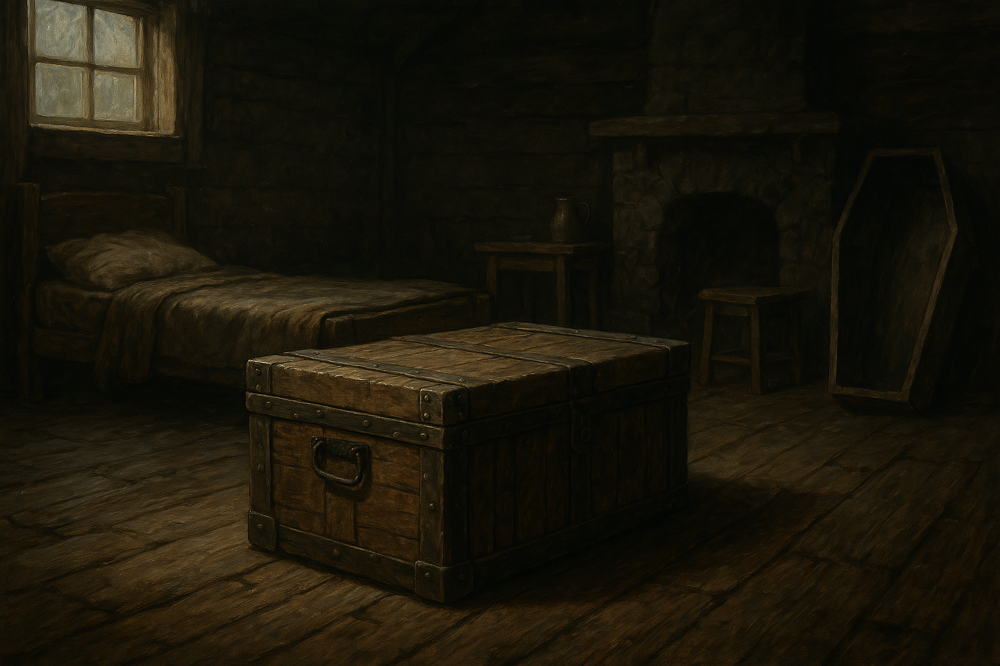

Chapter 3: Invitation to T.I.D.E.S.
The Elite Bloodline

The Elite Bloodline
15049.03.17
擊敗了骷髏後，冒險者們決定先在小木屋過夜，隔天再回爵士家。小木屋內只有一張床，羅羅率先佔領了那張床。同時，阿龍開始翻找爵士信中提到的「寶物」到底在什麼地方。他發現在床底下有個很大的木箱，於是連同床上的羅羅，將床搬起。在大家的合作下，終於將木箱搬了出來。
木箱上沒有明顯的鎖或是能夠撬開的地方，在各種嘗試都失敗後，冒險者決定隔天直接將箱子搬回去，畢竟信中只有提到要把寶物帶回，並沒有要求要打開。
除了羅羅外，大家基本上沒有地方可以睡。Leah走到房外，將一個空的棺材搬入小木屋內，躺進去後便開始睡了。阿龍將木箱搬到鑰的推車上後，靠著推車睡了。鑰倚著木箱也睡了，松鼠則睡在他身邊。毛毛率先守夜。
整夜大家輪流守夜，也發生了一些小插曲。
阿龍守夜時，因為想到剛才聽到海妖的歌聲傳入耳中受到影響，於是趁著毛毛睡著時從他的腿上砍下了一點毛，嘗試做成耳塞。在他砍下第二刀時，毛毛醒了，對此十分不爽。於是阿龍改為對松鼠下手。在松鼠被砍下毛時，他大聲尖叫後便昏倒了，因此鑰也被驚醒了。經過鑰的指點，阿龍才意識到放在毛毛頸部底下的枕頭內其實就有足夠的棉花可以做成耳塞。鑰也將松鼠抱在懷裡，以免他再受到任何襲擊。
輪到 Leah 守夜時，閒著的他跑到外面，將裝有骷髏的棺材一個一個排好，並整理好裡面的骷髏，整整齊齊，他認為這是榮耀涅西斯的一種表現。
羅羅守夜時，則在骷髏堆中找到了兩把用過的短刀，他打算隔日帶回城鎮中賣掉，換點錢。
15049.03.18
天亮後，冒險者們吃過早餐，便出發下山。大家分工搬著箱子，大約中午時便回到了爵士家。
僕人見到他們把箱子帶回來，感到十分驚訝，在大家點完自己要吃的食物後，僕人便出發去採買了。見到在客廳還是失智的 Bartosz 爵士，大家將箱子拿到爵士面前，也不確定到底期望看到什麼。誰知，爵士伸出手後，盒子發出了亮光，蓋子飄了起來，掉落在地上。盒子內是空的。冒險者們發愣之際，爵士竟然開口說話了。
冒險者們非常驚訝，這個「失智」的爵士，怎麼突然說起話來，甚至還能從輪椅上站起來。冒險者們趕緊向爵士詢問，得知他過去是 T.I.D.E.S. 的高層之一，現在由他的女兒 Riley 接替，而這個組織的高層可以與智慧之神 Jeorisan 溝通（阿龍得知自己信仰的 Jeorisan 竟然同時也是智慧之神，內心瞬間充滿了自信）。說起獎賞，爵士便走到宅邸後方的小房間，拿了一個小盒子回來，裡面有五個不同顏色的戒指，讓冒險者們一一挑選。
冒險者們問題還沒問完，卻發現坐回輪椅上的爵士竟然開始石化，一時間內便再也沒有動靜了。此時僕人剛好買完食物回來，雖然相信冒險者們的說詞，卻也不知道該怎麼辦。大家吃著僕人買回來的雞腿、魚和其他各種食物，同時讀著僕人從大門口門縫撿到的紙條。
經過了一些時間，他們拼湊出了兩條訊息：「15049 年 3 月 18 日 23:59」，以及「貝瑟頓第 1410 頁書店 T.I.D.E.S. 馬車」。冒險者們決定先去探勘一下，同時在剩下的半天時間，處理一下需要在城鎮內完成的雜事。
大家一起先去光顧了糖果店。在上次兩家糖果店外，羅羅和 Leah 還有一間還沒進去過。他們走入店內，買了一些糖果，其他冒險者們也推斷羅羅似乎對糖果有非常嚴重的成癮。
離開糖果店後，大家也在阿龍的帶領下回到 Smokey Smokey 煙斗店。老闆聽了冒險者們說明幽深林內發生的事（包含會偷刮人腳毛的骷髏）後，給了鑰和毛毛他答應的會員卡以及梳子。同時他也推薦阿龍一款他們今天剛進貨的菸草，裡面有薄荷和胡椒的辛香味，十分特別，阿龍也豪爽地買了一份。
走出 Smokey Smokey，冒險者們兵分兩路。羅羅和 Leah 再度嘗試使用陷阱，卻發現毫無所獲。
鑰、毛毛和阿龍則先去找「第 1410 頁」。毛毛想起，這是他過去常去的書店，因此知道怎麼走。書店內，熟悉的店員 Thompson 親切的和毛毛打招呼，並以他的全名「黎輝毛」稱呼他。對於這家書店十分有興趣的鑰翻到了一本「喬里森與其神話」，其中一則神話讓他特別注意到，裡面提到「從河流漂下的孩子，是被喬里森選中之子」，剛好與阿龍的遭遇相同（不過那時阿龍還是顆蛋），在阿龍開心之餘，他們便把書買下了。鑰在尋找與 T.I.D.E.S. 相關的書籍時，Thompson 表示他們今晚搭上馬車後，會得到更多答案。同時他也表明自己算是 T.I.D.E.S. 的外圍組織，但並非 T.I.D.E.S. 的成員。鑰認為 Thompson 不錯，因此也分享了關於他上岸後收集書的位置，歡迎 Thompson 去參觀。
在 Thompson 為鑰、毛毛和阿龍準備晚餐（當然包含毛毛最愛的雞腿）後，大家想起羅羅和 Leah 可能不知道怎麼來這邊，於是毛毛便跑回爵士家去接剛吃飽的兩人一起過來。
接近午夜，冒險者們聽到書店外傳來馬蹄聲。打開門，在馬車駕駛的協助下，他們將鑰的推車綁在馬車後方，大家上了車，看見車上已經有個人在了。
馬蹄聲再起，冒險者朝著 T.I.D.E.S. 的方向前進。